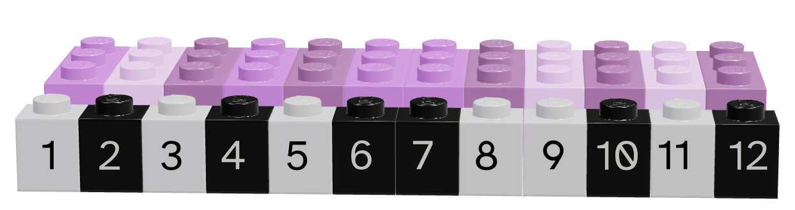
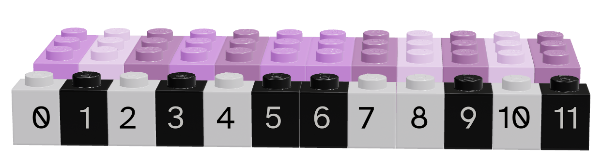
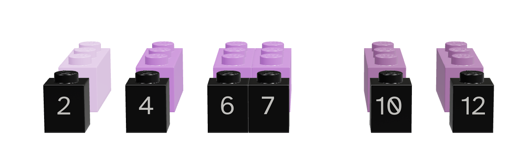
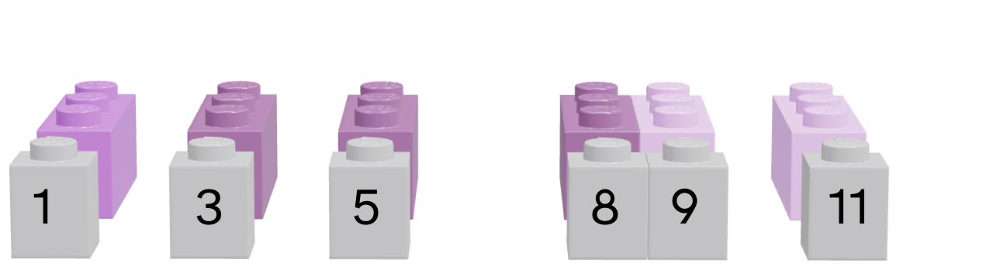
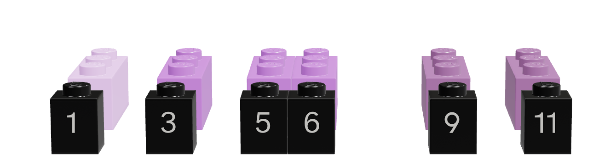

pip3 install numpy pandas lxml11 Data Structures
This chapter introduces some of the most important structures for storing and working with data: vectors, matrices, lists, and data frames.
Objectives
- Understand the differences between lists, vectors, data frames, matrices, and arrays in R and python
- Use location-based indexing in R or python to pull out subsets of a complex data object
- Use logical indexing in R or python to pull out subsets of a data object
- Understand categories of mathematical, descriptive, and set operations on vectors
- Use vector operations in R and python to perform simple calculations
Python Package Installation
You will need the numpy and pandas packages for this section. Pick one of the following ways to install python packages:
This package installation method requires that you have a virtual environment set up (that is, if you are on Windows, don’t try to install packages this way).
reticulate::py_install(c("numpy", "pandas", "lxml"))In a python chunk (or the python terminal), you can run the following command. This depends on something called “IPython magic” commands, so if it doesn’t work for you, try the System Terminal method instead.
%pip3 install numpy pandas lxml11.1 Data Structures Overview
In Chapter 8, we discussed 4 different data types: strings/characters, numeric/double/floats, integers, and logical/booleans. As you might imagine, things are about to get more complicated.
Data structures are more complex arrangements of information, but they are still (usually) created using the same data types we have previously discussed.
| Homogeneous | Heterogeneous | |
|---|---|---|
| 1D | vector | list |
| 2D | matrix | data frame |
| N-D | array |
Opinionated Structures
Those of you who have taken programming classes that were more computer science focused will realize that I am leaving out a lot of information about lower-level structures like pointers. I’m making a deliberate choice to gloss over most of those details in this chapter, because it’s already hard enough to learn 2 languages worth of data structures at a time. In addition, R doesn’t have pointers No Pointers in R, [1], so leaving out this material in python streamlines teaching both two languages, at the cost of overly simplifying some python concepts. If you want to read more about the Python concepts I’m leaving out, check out [2].
In any data structure, it’s important to be able to pull smaller pieces of data out of the structure. We do this via indexing.
There are three main approaches to accessing information using indexes:
Object Names
In some cases, components of a data structure are named and can be accessed using those names.Location
Think of a location index as accessing the nth item in a list, or accessing cell A5 in an Excel spreadsheet - you have strict directions as to what row/column or item to get.Logical Indexing
In a logical index, you access all items in a structure for which a condition is TRUE. This would be like making a list of family members, and then assigning bedtimes using a statement like “all of the children go to bed at 8pm” - first you decide whether a person is a child, and then you can assign the appropriate bedtime if child is true.
In both R and Python, we will primarily use square brackets to index different data types. When the data type is rectangular (has both rows and columns), we will use [row, column] syntax – that is, [1, 3] says access the first row, third column. When the data type is a vector, we will use [item] indexing.
Another important difference to keep in mind is that in R, items are 1-indexed – that is, the first item in a list x is x[1]. In Python, on the other hand, items are 0-indexed – the first item in a list y is y[0].
11.2 Vectors
A vector is a one-dimensional column of homogeneous data. Homogeneous means that every element in a vector has the same data type.
We can have vectors of any data type and length we want, as illustrated using Lego in Figure 11.11.

Demo: Creating Vectors
In R, we create vectors with the c() function, which stands for “concatenate” - basically, we stick a bunch of objects into a row.
digits_pi <- c(3, 1, 4, 1, 5, 9, 2, 6, 5, 3, 5)
# Access individual entries
digits_pi[1]
## [1] 3
digits_pi[2]
## [1] 1
digits_pi[3]
## [1] 4
# R is 1-indexed - a list of 11 things goes from 1 to 11
digits_pi[0]
## numeric(0)
digits_pi[11]
## [1] 5
# Print out the vector
digits_pi
## [1] 3 1 4 1 5 9 2 6 5 3 5In python, we create vectors using the array function in the numpy module. To add a python module, we use the syntax import <name> as <nickname>. Many modules have conventional (and very short) nicknames - for numpy, we will use np as the nickname. Any functions we reference in the numpy module will then be called using np.fun_name() so that python knows where to find them.2
import numpy as np
digits_list = [3,1,4,1,5,9,2,6,5,3,5]
digits_pi = np.array(digits_list)
# Access individual entries
digits_pi[0]
## np.int64(3)
digits_pi[1]
## np.int64(1)
digits_pi[2]
## np.int64(4)# Python is 0 indexed - a list of 11 things goes from 0 to 10
digits_pi[0]
## np.int64(3)
digits_pi[11]
## IndexError: index 11 is out of bounds for axis 0 with size 11
# multiplication works on the whole vector at once
digits_pi * 2
## array([ 6, 2, 8, 2, 10, 18, 4, 12, 10, 6, 10])
# Print out the vector
print(digits_pi)
## [3 1 4 1 5 9 2 6 5 3 5]Python has multiple things that look like vectors, including the pandas library’s Series structure. A Series is a one-dimensional array-like object containing a sequence of values and an associated array of labels (called its index).
import pandas as pd
digits_pi = pd.Series([3,1,4,1,5,9,2,6,5,3,5])
# Access individual entries
digits_pi[0]
## np.int64(3)
digits_pi[1]
## np.int64(1)
digits_pi[2]
## np.int64(4)# Python is 0 indexed - a list of 11 things goes from 0 to 10
digits_pi[0]
## np.int64(3)
digits_pi[11] # This errors out
## KeyError: 11
# logical indexing works here too
digits_pi[digits_pi > 3]
## 2 4
## 4 5
## 5 9
## 7 6
## 8 5
## 10 5
## dtype: int64
digits_pi.loc[digits_pi > 3]
## 2 4
## 4 5
## 5 9
## 7 6
## 8 5
## 10 5
## dtype: int64
# simple multiplication works in a vectorized manner
# that is, the whole vector is multiplied at once
digits_pi * 2
## 0 6
## 1 2
## 2 8
## 3 2
## 4 10
## 5 18
## 6 4
## 7 12
## 8 10
## 9 6
## 10 10
## dtype: int64
# Print out the series
print(digits_pi)
## 0 3
## 1 1
## 2 4
## 3 1
## 4 5
## 5 9
## 6 2
## 7 6
## 8 5
## 9 3
## 10 5
## dtype: int64The Series object has a list of labels in the first printed column, and a list of values in the second. If we want, we can specify the labels manually to use as e.g. plot labels later:
import pandas as pd
weekdays = pd.Series(['Sunday', 'Monday', 'Tuesday', 'Wednesday', 'Thursday', 'Friday', 'Saturday'], index = ['S', 'M', 'T', 'W', 'R', 'F', 'Sat'])# access individual objs
weekdays.iloc[0]
## 'Sunday'
weekdays.iloc[1]
## 'Monday'
weekdays.loc['S']
## 'Sunday'
weekdays.loc['Sat']
## 'Saturday'
# access the index
weekdays.index
## Index(['S', 'M', 'T', 'W', 'R', 'F', 'Sat'], dtype='object')
weekdays.index[6] = 'Z' # you can't assign things to the index to change it
## TypeError: Index does not support mutable operations
weekdays
## S Sunday
## M Monday
## T Tuesday
## W Wednesday
## R Thursday
## F Friday
## Sat Saturday
## dtype: object11.2.1 Indexing by Location
Each element in a vector has an index - an integer telling you what the item’s position within the vector is.
The index is important because it allows us to:
- Change values according to location or condition (e.g. replace all even values)
- Sequentially use values in the vector to complete a task (e.g. for each data point, compute some quantity)
- Select values in the vector based on location
- Select values in the vector based on a condition
| R | Python |
|---|---|
| 1-indexed language | 0-indexed language |
| Count elements as 1, 2, 3, 4, …, N | Count elements as 0, 1, 2, 3, , …, N-1 |
 |
 |
We can pull out items in a vector by indexing, but we can also replace specific things as well:
Demo: Replacing Values using Indexes
favorite_cats <- c("Grumpy", "Garfield", "Jorts", "Jean")
favorite_cats
## [1] "Grumpy" "Garfield" "Jorts" "Jean"
favorite_cats[2] <- "Nyan Cat"
favorite_cats
## [1] "Grumpy" "Nyan Cat" "Jorts" "Jean"favorite_cats = ["Grumpy", "Garfield", "Jorts", "Jean"]
favorite_cats
## ['Grumpy', 'Garfield', 'Jorts', 'Jean']
favorite_cats[1] = "Nyan Cat"
favorite_cats
## ['Grumpy', 'Nyan Cat', 'Jorts', 'Jean']Not familiar with these cats 3? Curiosity won’t kill you, but it might make you laugh!
11.2.2 Indexing with Logical Vectors
As you might imagine, we can create vectors of all sorts of different data types. One particularly useful trick is to create a logical vector that goes along with a vector of another type to use as a logical index.


Lego vectors showing the data (pink/purple) and the logical index (grey/black). Each image is numbered according to the position of the vector – in R, this numbering is from 1, in python, it is from 0.
Depending on what color we consider to be true, we can select different values from the original vector.
| Language | Black is True | Grey is True |
|---|---|---|
| R |  |  |
| Python |  |  |
Note that for logical indexing to work properly, the logical index must be the same length as the vector we’re indexing. This constraint will return when we talk about data frames, but for now, just keep in mind that logical indexing doesn’t make sense when this constraint isn’t true.
Demo: Logical Indexing
# Define a character vector
weekdays <- c("Sunday", "Monday", "Tuesday", "Wednesday", "Thursday", "Friday", "Saturday")
weekend <- c("Sunday", "Saturday")
# Create logical vectors
relax_days <- c(1, 0, 0, 0, 0, 0, 1) # doing this the manual way
relax_days <- weekdays %in% weekend # This creates a logical vector
# with less manual construction
relax_days
## [1] TRUE FALSE FALSE FALSE FALSE FALSE TRUE
school_days <- !relax_days # FALSE if weekend, TRUE if not
school_days
## [1] FALSE TRUE TRUE TRUE TRUE TRUE FALSE
# Using logical vectors to index the character vector
weekdays[school_days] # print out all school days
## [1] "Monday" "Tuesday" "Wednesday" "Thursday" "Friday"import numpy as np
animals = np.array(["Cat", "Dog", "Snake", "Lizard", "Tarantula", "Hamster", "Gerbil", "Otter"])
# Define a logical vector
good_pets = np.array([True, True, False, False, False, True, True, False])
bad_pets = np.invert(good_pets) # Invert the logical vector
# so True -> False and False -> True
animals[good_pets]
## array(['Cat', 'Dog', 'Hamster', 'Gerbil'], dtype='<U9')
animals[bad_pets]
## array(['Snake', 'Lizard', 'Tarantula', 'Otter'], dtype='<U9')
animals[~good_pets] # equivalent to using bad_pets
## array(['Snake', 'Lizard', 'Tarantula', 'Otter'], dtype='<U9')11.2.2.1 Logical Operations on Vectors
Indexing with logical vectors is an extremely powerful technique – so much so that it is worthwhile to quickly review how logical operations can be combined. In both R and Python, we can operate on logical vectors with standard operators – AND, OR, and NOT.
Demo: Logical Operators and Logical Indexing
pi_str <- sprintf("%0.50f", pi)
pi_str
pi_chars <- strsplit(pi_str, "")[[1]]
pi_chars
pi_num <- as.numeric(pi_chars)
pi_num
pi_num <- pi_num[!is.na(pi_num)]
pi_num
pi_num%%3==0
pi_num[pi_num%%3==0]
pi_num%%2==0
pi_num[pi_num%%2==0]
# Compound conditional statement with & = AND
pi_num%%2==0 & pi_num%%3==0
pi_num[pi_num%%2==0 & pi_num%%3==0]
## [1] "3.14159265358979311599796346854418516159057617187500"
## [1] "3" "." "1" "4" "1" "5" "9" "2" "6" "5" "3" "5" "8" "9" "7" "9" "3" "1" "1"
## [20] "5" "9" "9" "7" "9" "6" "3" "4" "6" "8" "5" "4" "4" "1" "8" "5" "1" "6" "1"
## [39] "5" "9" "0" "5" "7" "6" "1" "7" "1" "8" "7" "5" "0" "0"
## [1] 3 NA 1 4 1 5 9 2 6 5 3 5 8 9 7 9 3 1 1 5 9 9 7 9 6
## [26] 3 4 6 8 5 4 4 1 8 5 1 6 1 5 9 0 5 7 6 1 7 1 8 7 5
## [51] 0 0
## [1] 3 1 4 1 5 9 2 6 5 3 5 8 9 7 9 3 1 1 5 9 9 7 9 6 3 4 6 8 5 4 4 1 8 5 1 6 1 5
## [39] 9 0 5 7 6 1 7 1 8 7 5 0 0
## [1] TRUE FALSE FALSE FALSE FALSE TRUE FALSE TRUE FALSE TRUE FALSE FALSE
## [13] TRUE FALSE TRUE TRUE FALSE FALSE FALSE TRUE TRUE FALSE TRUE TRUE
## [25] TRUE FALSE TRUE FALSE FALSE FALSE FALSE FALSE FALSE FALSE FALSE TRUE
## [37] FALSE FALSE TRUE TRUE FALSE FALSE TRUE FALSE FALSE FALSE FALSE FALSE
## [49] FALSE TRUE TRUE
## [1] 3 9 6 3 9 9 3 9 9 9 6 3 6 6 9 0 6 0 0
## [1] FALSE FALSE TRUE FALSE FALSE FALSE TRUE TRUE FALSE FALSE FALSE TRUE
## [13] FALSE FALSE FALSE FALSE FALSE FALSE FALSE FALSE FALSE FALSE FALSE TRUE
## [25] FALSE TRUE TRUE TRUE FALSE TRUE TRUE FALSE TRUE FALSE FALSE TRUE
## [37] FALSE FALSE FALSE TRUE FALSE FALSE TRUE FALSE FALSE FALSE TRUE FALSE
## [49] FALSE TRUE TRUE
## [1] 4 2 6 8 6 4 6 8 4 4 8 6 0 6 8 0 0
## [1] FALSE FALSE FALSE FALSE FALSE FALSE FALSE TRUE FALSE FALSE FALSE FALSE
## [13] FALSE FALSE FALSE FALSE FALSE FALSE FALSE FALSE FALSE FALSE FALSE TRUE
## [25] FALSE FALSE TRUE FALSE FALSE FALSE FALSE FALSE FALSE FALSE FALSE TRUE
## [37] FALSE FALSE FALSE TRUE FALSE FALSE TRUE FALSE FALSE FALSE FALSE FALSE
## [49] FALSE TRUE TRUE
## [1] 6 6 6 6 0 6 0 0- 1
-
Get 50 digits of pi as a string.
sprintfworks from specially formatted strings, so%0.50fsays we will pass in a float and we want the string to be formatted with 50 decimal places of that float value. - 2
-
Split the string into single characters.
strsplitexpects a vector, and returns a list, so as we’re working with only a single string, we tell it we’re only interested in the first set of values[[1]]. - 3
-
Convert the single-number values to numbers. We get a warning because
.doesn’t convert to a number properly and R uses NA to indicate that the conversion didn’t work 100% of the time. - 4
- Use logical indexing to get only things that actually converted to numbers properly.
- 5
-
Get only the values in
pi_numwhich are evenly divisible by 3 – that is, which are multiples of 3. - 6
-
Get only the values in
pi_numwhich are evenly divisible by 2 – that is, which are multiples of 2. - 7
-
Get only the values in
pi_numwhich are evenly divisible by 2 and 3 – that is, which are multiples of 6.
import math
import pandas as pd
pi_str = f"{math.pi:0.50f}"
print(pi_str)
pi_chars = pd.Series(list(pi_str))
print(pi_chars.head())
pi_num = pd.to_numeric(pi_chars, errors="coerce")
print(pi_num.head())
pi_num = pi_num[~pd.isna(pi_num)]
print(pi_num.head())
pi_num = pi_num.astype("int")
print(pi_num.head())
print(pi_num[pi_num % 3 == 0])
print(pi_num[pi_num % 2 == 0])
print(pi_num[(pi_num % 2 == 0) & (pi_num % 3 == 0)])
## 3.14159265358979311599796346854418516159057617187500
## 0 3
## 1 .
## 2 1
## 3 4
## 4 1
## dtype: object
## 0 3.0
## 1 NaN
## 2 1.0
## 3 4.0
## 4 1.0
## dtype: float64
## 0 3.0
## 2 1.0
## 3 4.0
## 4 1.0
## 5 5.0
## dtype: float64
## 0 3
## 2 1
## 3 4
## 4 1
## 5 5
## dtype: int64
## 0 3
## 6 9
## 8 6
## 10 3
## 13 9
## 15 9
## 16 3
## 20 9
## 21 9
## 23 9
## 24 6
## 25 3
## 27 6
## 36 6
## 39 9
## 40 0
## 43 6
## 50 0
## 51 0
## dtype: int64
## 3 4
## 7 2
## 8 6
## 12 8
## 24 6
## 26 4
## 27 6
## 28 8
## 30 4
## 31 4
## 33 8
## 36 6
## 40 0
## 43 6
## 47 8
## 50 0
## 51 0
## dtype: int64
## 8 6
## 24 6
## 27 6
## 36 6
## 40 0
## 43 6
## 50 0
## 51 0
## dtype: int64- 1
- Load math library (for pi) and pandas (for Series/vector structure)
- 2
-
Get 50 digits of pi as a string.
fat the front says that this is a formatted string, and inside{}we have the value of the stringmath.piand the format0.50f– note this is essentially the same in R and python.0.50fsays we will pass in a float and we want the string to be formatted with 50 decimal places of that float value. - 3
- Converting a string to a list extracts the single characters in Python. Then we convert this to a pandas Series because it will behave more like a single-type vector.
- 4
- We convert the vector to numeric, coercing anything that isn’t numeric – this will cause ‘.’ to be converted to NA without raising an error.
- 5
-
We then create a logical vector
pd.isna(pi_num)that is TRUE whenpi_numhas the valueNA. Putting~in front of this vector negates it, causing the logical vector to be FALSE whenpi_numis NA. Using this as an index keeps only the values in the vector which are NOT NA – that is, only the numbers remain. - 6
- We convert the float values to integers, since they represent digits.
- 7
-
We create a logical vector
pi_num%3==0that is TRUE whenpi_numis a multiple of 3 (or evenly divisible by 3) and FALSE otherwise. We use this as an index to extract only digits of pi that are multiples of 3. - 8
-
We create a logical vector
pi_num%2==0that is TRUE whenpi_numis a multiple of 2 (or evenly divisible by 2) and FALSE otherwise. We use this as an index to extract only digits of pi that are multiples of 2. - 9
- We combine the two conditional statements to create a compound statement that is TRUE only when the digit is a multiple of 2 AND 3 (that is, when the digit is a multiple of 6).
11.2.3 Math with Vectors
In order to talk about mathematical operations on (numerical) vectors, we first need to consider different ways we could combine vectors. If the vectors are the same length, we could perform mathematical operations on the elements (and if they’re not the same length we could come up with some convention to coerce them to be the same length).
\[\begin{align} \left[\begin{array}{c}a_1\\a_2\\a_3\end{array}\right] + \left[\begin{array}{c}b_1\\b_2\\b_3\end{array}\right] = \left[\begin{array}{c}a_1+b_1\\a_2 + b_2\\a_3 + b_3\end{array}\right] \end{align} \tag{11.1}\]
Equation 11.1 shows how an element-wise sum of two vectors is defined mathematically.
We could also think about performing mathematical operations on all of the entries in a vector - e.g. taking the sum of all vector entries, or the mean, or the standard deviation. This reduces a vector of numbers to a single (scalar) number via a defined function. We can use standard built-in functions, or we could define our own (see Chapter 14).
Another option is to think of vectors as a way to specify items, and define mathematical ways to combine different sets of items. These vector operations are more akin to set operations, where the product of two vectors is the product set of all combinations of an item from vector 1 and an item from vector 2. Technically, these operations are typically also defined for lists, but they may make more sense in practice when the vector same-type constraint is imposed.
We can finally combine vectors using linear algebra; if you are interested in these definitions, see Chapter 12.
11.2.3.1 Element-wise Operations
When using numeric vectors, the element-wise operations are the same for vectors and scalars (Table 11.1 is the same exact table as Table 9.1 in Chapter 9).
| Operation | R symbol | Python symbol |
|---|---|---|
| Addition | + |
+ |
| Subtraction | - |
- |
| Multiplication | * |
* |
| Division | / |
/ |
| Integer Division | %/% |
// |
| Modular Division | %% |
% |
| Exponentiation | ^ |
** |
a <- c(1:5)
b <- c(6:10)
a + b
## [1] 7 9 11 13 15
b - a
## [1] 5 5 5 5 5
a * b
## [1] 6 14 24 36 50
b / a
## [1] 6.000000 3.500000 2.666667 2.250000 2.000000
b %/% a
## [1] 6 3 2 2 2
b %% a
## [1] 0 1 2 1 0
a ^ b
## [1] 1 128 6561 262144 9765625import numpy as np
a = np.array([1, 2, 3, 4, 5])
b = np.array([6, 7, 8, 9, 10])
a + b
## array([ 7, 9, 11, 13, 15])
b - a
## array([5, 5, 5, 5, 5])
a * b
## array([ 6, 14, 24, 36, 50])
b / a
## array([6. , 3.5 , 2.66666667, 2.25 , 2. ])
b // a
## array([6, 3, 2, 2, 2])
b % a
## array([0, 1, 2, 1, 0])
a ** b
## array([ 1, 128, 6561, 262144, 9765625])11.2.3.2 Vector-to-Scalar Operations
There are a few built-in or commonly-used vector summary operations here. This table focuses on those which are most useful for statistics.
| Function | R | Python |
|---|---|---|
| length | length(x) |
len(x) |
| mean | mean(x) |
x.average() |
| variance | var(x) |
x.var() |
| standard deviation | sd(x) |
x.std() |
| maximum | max(x) |
x.max() |
| location of maximum | which.max(x) |
x.argmax() |
| minimum | min(x) |
x.min() |
| location of minimum | which.min(x) |
x.argmin() |
Demo: Vector-to-scalar operations
set.seed(30420983)
x <- sample(1:100, size = 10)
x
## [1] 43 91 25 40 60 39 18 53 58 99
length(x)
## [1] 10
mean(x)
## [1] 52.6
var(x)
## [1] 678.4889
sd(x)
## [1] 26.04782
max(x)
## [1] 99
min(x)
## [1] 18
which.max(x)
## [1] 10
which.min(x)
## [1] 7
# 5 number summary + mean
summary(x)
## Min. 1st Qu. Median Mean 3rd Qu. Max.
## 18.00 39.25 48.00 52.60 59.50 99.00import numpy as np
import random # need for setting the seed
random.seed(30420983)
x = random.sample(range(1, 101), 10)
x = np.array(x)
x
## array([28, 61, 65, 35, 90, 26, 19, 12, 38, 9])
len(x)
## 10
x.mean()
## np.float64(38.3)
x.var()
## np.float64(609.21)
x.std()
## np.float64(24.68217980649197)
x.max()
## np.int64(90)
x.min()
## np.int64(9)
x.argmax()
## np.int64(4)
x.argmin()
## np.int64(9)If we want to use Pandas, we can get a summary of our vector using .describe(), but this requires converting our numpy array to a Pandas series.
import pandas as pd
x = pd.Series(x)
x
## 0 28
## 1 61
## 2 65
## 3 35
## 4 90
## 5 26
## 6 19
## 7 12
## 8 38
## 9 9
## dtype: int64
x.describe()
## count 10.000000
## mean 38.300000
## std 26.017302
## min 9.000000
## 25% 20.750000
## 50% 31.500000
## 75% 55.250000
## max 90.000000
## dtype: float6411.2.3.3 Set Operations
There are 3 basic set operations: union, intersection, and set difference, as well as the Cartesian product. The Cartesian product creates a set of points in vector space (in math terms) or tuples (in python terms), which is usually represented as something other than a vector (in R, a data frame).
Generally speaking, all of these operations would be valid on lists as well as vectors in R, though in python, these functions are part of numpy and require 1-dimensional arrays. There are certainly ways to implement set operations in base python, but they typically do not have convenient named functions - you’d need to write your own or import another library.
| Operation | Definition | Symbol (Math) | R function | Python function |
|---|---|---|---|---|
| Union | All elements in A or B | \(A \cup B\) | union(A, B) |
np.union1d(A, B) |
| Intersection | Elements in both A and B | \(A \cap B\) | intersect(A, B) |
np.intersect1d(A, B) |
| Set Difference | Elements in A but not B | \(A \setminus B\) | setdiff(A, B) |
np.setdiff1d(A, B) |
| Cartesian Product | Combination of each element in A with each element in B | \(A\times B\) | expand.grid(A, B) |
… it’s complicated, see code. |
Demo: Set Operations
A = c(1:4)
B = c(1:5) * 2 # evens
union(A, B)
## [1] 1 2 3 4 6 8 10
intersect(A, B)
## [1] 2 4
setdiff(A, B)
## [1] 1 3
setdiff(B, A)
## [1] 6 8 10
expand.grid(A, B) # this is a data frame
## Var1 Var2
## 1 1 2
## 2 2 2
## 3 3 2
## 4 4 2
## 5 1 4
## 6 2 4
## 7 3 4
## 8 4 4
## 9 1 6
## 10 2 6
## 11 3 6
## 12 4 6
## 13 1 8
## 14 2 8
## 15 3 8
## 16 4 8
## 17 1 10
## 18 2 10
## 19 3 10
## 20 4 10import numpy as np
A = np.array(range(1, 5))
B = np.array(range(1, 6)) * 2
np.union1d(A, B)
## array([ 1, 2, 3, 4, 6, 8, 10])
np.intersect1d(A, B)
## array([2, 4])
np.setdiff1d(A, B)
## array([1, 3])
np.setdiff1d(B, A)
## array([ 6, 8, 10])To combine numpy arrays with a Cartesian product in base Python, we have to use something called list comprehension. I’ll leave this example here, but you don’t need to fully understand how it works yet, as it is using for loops in a python-centric way.
[[a0, b0] for a0 in A for b0 in B] # sets of coordinates
## [[np.int64(1), np.int64(2)], [np.int64(1), np.int64(4)], [np.int64(1), np.int64(6)], [np.int64(1), np.int64(8)], [np.int64(1), np.int64(10)], [np.int64(2), np.int64(2)], [np.int64(2), np.int64(4)], [np.int64(2), np.int64(6)], [np.int64(2), np.int64(8)], [np.int64(2), np.int64(10)], [np.int64(3), np.int64(2)], [np.int64(3), np.int64(4)], [np.int64(3), np.int64(6)], [np.int64(3), np.int64(8)], [np.int64(3), np.int64(10)], [np.int64(4), np.int64(2)], [np.int64(4), np.int64(4)], [np.int64(4), np.int64(6)], [np.int64(4), np.int64(8)], [np.int64(4), np.int64(10)]]
[[(a0, b0) for a0 in A] for b0 in B] # vectors of coordinates
## [[(np.int64(1), np.int64(2)), (np.int64(2), np.int64(2)), (np.int64(3), np.int64(2)), (np.int64(4), np.int64(2))], [(np.int64(1), np.int64(4)), (np.int64(2), np.int64(4)), (np.int64(3), np.int64(4)), (np.int64(4), np.int64(4))], [(np.int64(1), np.int64(6)), (np.int64(2), np.int64(6)), (np.int64(3), np.int64(6)), (np.int64(4), np.int64(6))], [(np.int64(1), np.int64(8)), (np.int64(2), np.int64(8)), (np.int64(3), np.int64(8)), (np.int64(4), np.int64(8))], [(np.int64(1), np.int64(10)), (np.int64(2), np.int64(10)), (np.int64(3), np.int64(10)), (np.int64(4), np.int64(10))]]We can also use a library that implements the Cartesian product explicitly, and then convert the result to a data type we would prefer to work with, like an array of coordinates, or a data frame.
# Using a library
import itertools
np.array(list(itertools.product(A, B))) # array of 2d coords
## array([[ 1, 2],
## [ 1, 4],
## [ 1, 6],
## [ 1, 8],
## [ 1, 10],
## [ 2, 2],
## [ 2, 4],
## [ 2, 6],
## [ 2, 8],
## [ 2, 10],
## [ 3, 2],
## [ 3, 4],
## [ 3, 6],
## [ 3, 8],
## [ 3, 10],
## [ 4, 2],
## [ 4, 4],
## [ 4, 6],
## [ 4, 8],
## [ 4, 10]])
pd.DataFrame(list(itertools.product(A, B))) # data frame
## 0 1
## 0 1 2
## 1 1 4
## 2 1 6
## 3 1 8
## 4 1 10
## 5 2 2
## 6 2 4
## 7 2 6
## 8 2 8
## 9 2 10
## 10 3 2
## 11 3 4
## 12 3 6
## 13 3 8
## 14 3 10
## 15 4 2
## 16 4 4
## 17 4 6
## 18 4 8
## 19 4 1011.2.4 Data Types and Vector Operations
Demo: Different Types in a Vector
As vectors are a collection of things of a single type, what happens if we try to make a vector with differently typed things?
c(2L, FALSE, 3.1415, "animal")
c(2L, FALSE, 3.1415)
c(2L, FALSE)
## [1] "2" "FALSE" "3.1415" "animal"
## [1] 2.0000 0.0000 3.1415
## [1] 2 0- 1
- all converted to strings
- 2
- converted to numerics
- 3
- converted to integers
import numpy as np
np.array([2, False, 3.1415, "animal"])
np.array([2, False, 3.1415])
np.array([2, False])
## array(['2', 'False', '3.1415', 'animal'], dtype='<U32')
## array([2. , 0. , 3.1415])
## array([2, 0])- 1
- all converted to strings
- 2
- converted to numerics
- 3
- converted to integers
As a reminder, this is an example of implicit type conversion - R and python decide what type to use for you, going with the type that doesn’t lose data but takes up as little space as possible.
Try it Out: Logical Indexing
Create a vector of the integers from one to 30. Use logical indexing to pick out only the numbers that are multiples of 3.
We define a vector of numbers from 1 to 30 as
1:30in R andrange(1, 31)in Python.
In Python, we also want to convert this range into a numpy array, so we need to import numpy.We can use logical indexing to select only some elements of a vector which meet our criteria - in this case, that the number is evenly divisible by 3.
Modular Division The mathematical operator that is useful for testing “evenly divisible” is the modulus operator, which provides the remainder when a number is divided by another number. So,
15 modulo 4(or15 mod 4) breaks down the division problem into two components - the whole number (3x4 = 12) and the fractional remainder (15 - 12 = 3). Thus,15 mod 4is 3.- We use modular division frequently to test whether something is a multiple of something else. Usually in these cases we’re testing whether (
x mod y == 0), which corresponds to a statement “x is a multiple of y”. - This translates into
x%%3==0in R orx%3==0in Python
- We use modular division frequently to test whether something is a multiple of something else. Usually in these cases we’re testing whether (
We index vectors using
[]in both R and python.
x <- 1:30
x [ x %% 3 == 0]
## [1] 3 6 9 12 15 18 21 24 27 30import numpy as np
x = np.array(range(1, 31)) # because python is 0 indexed
x[ x % 3 == 0]
## array([ 3, 6, 9, 12, 15, 18, 21, 24, 27, 30])Extra challenge: Pick out numbers which are multiples of 2 or 3, but not multiples of 6!
x mod 3 == 0will pick out the multiples of 3,x mod 2==0will pick out the multiples of 2, andx mod 6==0will pick out the multiples of 6We need to combine the statements using AND and OR operators, or use the XOR (exclusive or) operator, if you prefer to go that route.
Think of each condition as a letter or set. One option is to define variables A and B that represent the initial logical vectors, and then do logical operations on those vectors to get the full condition. Another option is to work it all out with math and only substitute the modulo operators at the end.
(A OR B) AND NOT (A AND B)and slowly shift to programming notation from logical/math notation.(A | B) & NOT (A & B)replaces the AND and OR operators- Tackle the NOT operator with
(A | B) & !(A & B). - Replace the A and B with the conditionals:
(x mod 2 == 0 | x mod 3 == 0) & !(x mod 6 == 0). Here, A&B is equivalent tox mod 6 == 0mathematically (but it would also be ok to use the full modulus statements).
This operation is xor, a.k.a. exclusive or. That is, X or Y, but not both X AND Y.
We can write xor as (X OR Y) & !(X AND Y) – or we can use a predefined function: xor() in R, ^ in python.
x <- 1:30
xor_sol <- xor(x %% 2 == 0, x %% 3 == 0)
x[xor_sol]
## [1] 2 3 4 8 9 10 14 15 16 20 21 22 26 27 28We can also write out the full set of conditional statements - it should work out to the same solution.
full_sol <- (x %% 2 == 0 | x %% 3 == 0) & !(x %% 2 == 0 & x %% 3 == 0)
x[full_sol]
## [1] 2 3 4 8 9 10 14 15 16 20 21 22 26 27 28This solution uses intermediate variables to make things easier to understand and write.
x <- 1:30
a <- x %% 2 == 0 # multiples of 2
b <- x %% 3 == 0 # multiples of 3
a_and_b <- x %% 6 == 0 # multiples of 6
a_xor_b <- xor(a, b)
x[a_xor_b]
## [1] 2 3 4 8 9 10 14 15 16 20 21 22 26 27 28Similarly, we can avoid using XOR and just use the full set of conditional statements.
a_b_full <- (a | b) & !(a_and_b)
x[a_b_full]
## [1] 2 3 4 8 9 10 14 15 16 20 21 22 26 27 28import numpy as np
x = np.array(range(1, 31))
xor_sol = (x % 2 == 0) ^ (x % 3 == 0)
x[xor_sol]
## array([ 2, 3, 4, 8, 9, 10, 14, 15, 16, 20, 21, 22, 26, 27, 28])We can also use the full set of conditional statements if we would rather be explicit.
full_sol = ((x % 2 == 0) | (x % 3 == 0)) & ~(x % 6 == 0)
x[full_sol]
## array([ 2, 3, 4, 8, 9, 10, 14, 15, 16, 20, 21, 22, 26, 27, 28])This solution uses intermediate variables to make things easier to understand and write.
import numpy as np
x = np.array(range(1, 31))
a = x % 2 == 0 # multiples of 2
b = x % 3 == 0 # multiples of 3
a_xor_b = a ^ b
x[a_xor_b]
## array([ 2, 3, 4, 8, 9, 10, 14, 15, 16, 20, 21, 22, 26, 27, 28])We can also use the full set of conditional statements if we would rather be explicit.
a_b_full = (a|b) & ~(a & b)
x[a_b_full]
## array([ 2, 3, 4, 8, 9, 10, 14, 15, 16, 20, 21, 22, 26, 27, 28])11.3 Lists
A list is a one-dimensional column of heterogeneous data - the things stored in a list can be of different types.

Creating Lists
x <- list("a", 3, FALSE)
x
## [[1]]
## [1] "a"
##
## [[2]]
## [1] 3
##
## [[3]]
## [1] FALSEx = ["a", 3, False]
x
## ['a', 3, False]The most important thing to know about lists, for the moment, is how to pull things out of the list. As with vectors, we call this process indexing.
11.3.1 Indexing Lists
Every element in a list has an index (a location, indicated by an integer position).
Demo: Indexing with Lists
In R, we count from 1.

In R, list indexing with [] will return a list with the specified elements.
x <- list("a", 3, FALSE)
x[1]
x[1:2]- 1
- This returns a list
- 2
- This returns multiple elements in the list. Notice that in R, a:b notation gives a, a+1, …, b, including b. In Python, the same notation does not include b, so watch out.
[[1]]
[1] "a"
[[1]]
[1] "a"
[[2]]
[1] 3To actually retrieve the item in the list, use [[]]. The only downside to [[]] is that you can only access one thing at a time.
x[[1]]
x[[1:2]]- 1
- This returns the item
- 2
- This doesn’t work - you can only use [[]] with a single index
Error in x[[1:2]]: subscript out of bounds[1] "a"In Python, we count from 0.

x = ["a", 3, False]
x[0]
x[1]
x[0:2]- 1
- This returns a scalar
- 2
- This returns a scalar
- 3
- This returns a list. Notice that Python indexing 0:2 is 0, 1 – that is, creating a sequential index a:b returns integers (a, …, b-1) excluding b. This is different from R, so watch out!
'a'
3
['a', 3]In Python, we can use single brackets to get an object or a list back out, but we have to know how slices work. Essentially, in Python, 0:2 indicates that we want objects 0 and 1, but want to stop at 2 (not including 2). If you use a slice, Python will return a list; if you use a single index, python just returns the value in that location in the list.
We’ve also talked about indexing as it relates to vectors – for the most part, the two concepts work exactly the same, subject to some minor things in R about differences between x[[idx]] and x[idx].
11.3.2 Concatenation
Another important thing to know about lists is how to combine them. If I have rosters for two classes and I want to make a list of all of my students, I need to somehow merge the two lists together.
In addition, it is often necessary to get only one copy of each item, even if it appears across multiple lists.
Demo: Concatenation of Vectors and Unique Elements
Let’s consider some characters from two Star Trek series: DS9 and The Next Generation. One character, Miles O’Brien, appears in both series. When we combine lists, it is sometimes sensible to have only unique elements in the list (e.g. Miles O’Brien should only appear once) – but that is not always true.
class1 <- c("Benjamin Sisko", "Odo", "Julian Bashir", "Jadzia Dax", "Miles O'Brien", "Quark", "Kira Nerys", "Elim Garak")
class2 <- c("Jean-Luc Picard", "William Riker", "Geordi La Forge", "Worf", "Miles O'Brien", "Beverly Crusher", "Deanna Troi", "Data")
students <- c(class1, class2)
students
## [1] "Benjamin Sisko" "Odo" "Julian Bashir" "Jadzia Dax"
## [5] "Miles O'Brien" "Quark" "Kira Nerys" "Elim Garak"
## [9] "Jean-Luc Picard" "William Riker" "Geordi La Forge" "Worf"
## [13] "Miles O'Brien" "Beverly Crusher" "Deanna Troi" "Data"
unique(students) # get only unique names
## [1] "Benjamin Sisko" "Odo" "Julian Bashir" "Jadzia Dax"
## [5] "Miles O'Brien" "Quark" "Kira Nerys" "Elim Garak"
## [9] "Jean-Luc Picard" "William Riker" "Geordi La Forge" "Worf"
## [13] "Beverly Crusher" "Deanna Troi" "Data"class1 = ["Benjamin Sisko", "Odo", "Julian Bashir", "Jadzia Dax", "Miles O'Brien", "Quark", "Kira Nerys", "Elim Garak"]
class2 = ["Jean-Luc Picard", "William Riker", "Geordi La Forge", "Worf", "Miles O'Brien", "Beverly Crusher", "Deanna Troi", "Data"]
students = class1 + class2
students
## ['Benjamin Sisko', 'Odo', 'Julian Bashir', 'Jadzia Dax', "Miles O'Brien", 'Quark', 'Kira Nerys', 'Elim Garak', 'Jean-Luc Picard', 'William Riker', 'Geordi La Forge', 'Worf', "Miles O'Brien", 'Beverly Crusher', 'Deanna Troi', 'Data']
list(dict.fromkeys(students)) # get only unique names
## ['Benjamin Sisko', 'Odo', 'Julian Bashir', 'Jadzia Dax', "Miles O'Brien", 'Quark', 'Kira Nerys', 'Elim Garak', 'Jean-Luc Picard', 'William Riker', 'Geordi La Forge', 'Worf', 'Beverly Crusher', 'Deanna Troi', 'Data']11.4 Matrices
A matrix is the next step after a vector - it’s a set of values arranged in a two-dimensional, rectangular format.
Demo: Creating Matrices

# Minimal matrix in R: take a vector,
# tell R how many rows you want
matrix(1:12, nrow = 3)
## [,1] [,2] [,3] [,4]
## [1,] 1 4 7 10
## [2,] 2 5 8 11
## [3,] 3 6 9 12
matrix(1:12, ncol = 3) # or columns
## [,1] [,2] [,3]
## [1,] 1 5 9
## [2,] 2 6 10
## [3,] 3 7 11
## [4,] 4 8 12
# by default, R will fill in column-by-column
# the byrow parameter tells R to go row-by-row
matrix(1:12, nrow = 3, byrow = T)
## [,1] [,2] [,3] [,4]
## [1,] 1 2 3 4
## [2,] 5 6 7 8
## [3,] 9 10 11 12
# We can also easily create square matrices
# with a specific diagonal (this is useful for modeling)
diag(rep(1, times = 4))
## [,1] [,2] [,3] [,4]
## [1,] 1 0 0 0
## [2,] 0 1 0 0
## [3,] 0 0 1 0
## [4,] 0 0 0 1In python, matrices are just a special case of a class called ndarray - n-dimensional arrays.
import numpy as np
# Minimal ndarray in python by typing in the values in a structured format
np.array([[0, 1, 2],
[3, 4, 5],
[6, 7, 8],
[9, 10, 11]])
## array([[ 0, 1, 2],
## [ 3, 4, 5],
## [ 6, 7, 8],
## [ 9, 10, 11]])
# This syntax creates a list of the rows we want in our matrix
# Matrix in python using a data vector and size parameters
np.reshape(range(0,12), (3,4))
## array([[ 0, 1, 2, 3],
## [ 4, 5, 6, 7],
## [ 8, 9, 10, 11]])
np.reshape(range(0,12), (4,3))
## array([[ 0, 1, 2],
## [ 3, 4, 5],
## [ 6, 7, 8],
## [ 9, 10, 11]])
np.reshape(range(0,12), (3,4), order = 'F')
## array([[ 0, 3, 6, 9],
## [ 1, 4, 7, 10],
## [ 2, 5, 8, 11]])In python, we create 2-dimensional arrays (aka matrices) either by creating a list of rows to join together or by reshaping a 1-dimensional array. The trick with reshaping the 1-dimensional array is the order argument: F stands for “Fortran-like” and C stands for “C-like”… so to go by column, you use F and to go by row, you use C. Totally intuitive, right?
Don’t Panic!
If you are using this textbook as an undergraduate or non-statistician, don’t panic – you don’t need linear algebra or matrices to learn how to do statistical programming. If you have it, great!
For now, you need the following:
- Know that matrices exist and what they are (2-dimensional arrays of numbers)
- Understand how they are indexed (because it is extremely similar to data frames that we’ll work with in the next chapter)
- Be aware that there are lots of functions that depend on matrix operations at their core (including linear regression)
If you’re a graduate student in statistics or data science, you should probably already have had linear algebra… otherwise, … good luck!
For more on matrix operations and matrix calculations, see Chapter 12.
11.4.1 Indexing in Matrices
Both R and python use [row, column] to index matrices. To extract the bottom-left element of a 3x4 matrix in R, we would use [3,1] to get to the third row and first column entry; in python, we would use [2,0] (remember that Python is 0-indexed).
As with vectors, you can replace elements in a matrix using assignment.
Demo: Matrix Indexing
my_mat <- matrix(1:12, nrow = 3, byrow = T)
my_mat[3,1] <- 500
my_mat
## [,1] [,2] [,3] [,4]
## [1,] 1 2 3 4
## [2,] 5 6 7 8
## [3,] 500 10 11 12Remember that zero-indexing!
import numpy as np
my_mat = np.reshape(range(1, 13), (3,4))
my_mat[2,0] = 500
my_mat
## array([[ 1, 2, 3, 4],
## [ 5, 6, 7, 8],
## [500, 10, 11, 12]])11.4.2 Matrix Operations
There are a number of matrix operations that we need to know for basic programming purposes:
- scalar multiplication \[c*\textbf{X} = c * \left[\begin{array}{cc} x_{1,1} & x_{1, 2}\\x_{2,1} & x_{2,2}\end{array}\right] = \left[\begin{array}{cc} c*x_{1,1} & c*x_{1, 2}\\c*x_{2,1} & c*x_{2,2}\end{array}\right]\]
- transpose - flip the matrix across the left top -> right bottom diagonal. \[t(\textbf{X}) = \left[\begin{array}{cc} x_{1,1} & x_{1, 2}\\x_{2,1} & x_{2,2}\end{array}\right]^T = \left[\begin{array}{cc} x_{1,1} & x_{2,1}\\x_{1,2} & x_{2,2}\end{array}\right]\]
- matrix multiplication (dot product) - If you haven’t had this in Linear Algebra, here’s a preview. See [3] for a better explanation \[\textbf{X}*\textbf{Y} = \left[\begin{array}{cc} x_{1,1} & x_{1, 2}\\x_{2,1} & x_{2,2}\end{array}\right] * \left[\begin{array}{cc} y_{1,1} \\y_{2,1} \end{array}\right] = \left[\begin{array}{c}x_{1,1}*y_{1,1} + x_{1,2}*y_{2,1} \\x_{2, 1}*y_{1,1} + x_{2,2}*y_{2,1}\end{array}\right]\] Note that matrix multiplication depends on having matrices of compatible dimensions. If you have two matrices of dimension \((a \times b)\) and \((c \times d)\), then \(b\) must be equal to \(c\) for the multiplication to work, and your result will be \((a \times d)\).
Demo: Matrix Operations
x <- matrix(c(1, 2, 3, 4), nrow = 2, byrow = T)
y <- matrix(c(5, 6), nrow = 2)
# Scalar multiplication
x * 3
## [,1] [,2]
## [1,] 3 6
## [2,] 9 12
3 * x
## [,1] [,2]
## [1,] 3 6
## [2,] 9 12
# Transpose
t(x)
## [,1] [,2]
## [1,] 1 3
## [2,] 2 4
t(y)
## [,1] [,2]
## [1,] 5 6
# matrix multiplication (dot product)
x %*% y
## [,1]
## [1,] 17
## [2,] 39import numpy as np
x = np.array([[1,2],[3,4]])
y = np.array([[5],[6]])
# scalar multiplication
x*3
## array([[ 3, 6],
## [ 9, 12]])
3*x
## array([[ 3, 6],
## [ 9, 12]])
# transpose
x.T # shorthand
## array([[1, 3],
## [2, 4]])
x.transpose() # Long form
## array([[1, 3],
## [2, 4]])
# Matrix multiplication (dot product)
np.dot(x, y)
## array([[17],
## [39]])11.5 Arrays
Arrays are a generalized n-dimensional version of a vector: all elements have the same type, and they are indexed using square brackets in both R and python: [dim1, dim2, dim3, ...]
I don’t think you will need to create 3+ dimensional arrays in this class, but if you want to try it out, here is some code.
array(1:8, dim = c(2,2,2))
## , , 1
##
## [,1] [,2]
## [1,] 1 3
## [2,] 2 4
##
## , , 2
##
## [,1] [,2]
## [1,] 5 7
## [2,] 6 8Note that displaying this requires 2 slices, since it’s hard to display 3D information in a 2D terminal arrangement.
import numpy as np
np.array([[[1,2],[3,4]],[[5,6], [7,8]]])
## array([[[1, 2],
## [3, 4]],
##
## [[5, 6],
## [7, 8]]])11.6 Data Frames
In previous sections, we talked about homogeneous structures: arrangements of data, like vectors and matrices, where every entry in the larger structure has the same type. In the rest of this chapter, we’ll be talking about the root of most data science analysis projects: the data frame.
Like an excel spreadsheet, data frames are arrangements of data in columns and rows.
This format has two main restrictions:
- Every entry in each column must have the same data type
- Every column must have the same number of rows

Figure 11.5 shows a data frame of 4 columns, each with a different data type (brick size/hue). The data frame has 12 rows. This picture may look similar to one that we used to show logical indexing or lists in previous sections, and that is not a coincidence. You can get everything from a data frame that you would get from a collection of 4 separate vectors… but there are advantages to keeping things in a data frame instead. Similarly, a data frame is very similar to a list of vectors, but with an additional constraint that each vector in the list has the same number of items.
Example: Motivating Data Frames by Working with Multiple Vectors
Consider for a moment https://worldpopulationreview.com/states, which lists the population of each state. You can find this dataset in CSV form here.
In the previous sections, we learned how to make different vectors in R, numpy, and pandas. Let’s see what happens when we work with the data above as a set of vectors/Series compared to what happens when we work with data frames.
I’m reading in the data using functions we haven’t learned yet – focus primarily on the operations after the lines containing pd.read_csv.
import pandas as pd
data = pd.read_csv("https://raw.githubusercontent.com/srvanderplas/stat-computing-r-python/main/data/population2024.csv")
list(data.columns) # get names
## ['Unnamed: 0', 'Rank', 'State', '2024 Population', 'Growth Rate', '2023 Population', '2020 Population', 'Growth Since 2020', '% of US', 'Density (/mi²)']
# Create a few population series
population2024 = pd.Series(data['2024 Population'].values, index = data['State'].values)
population2023 = pd.Series(data['2023 Population'].values, index = data['State'].values)
population2020 = pd.Series(data['2020 Population'].values, index = data['State'].values)Suppose that we want to sort each population vector by the population in that year.
import pandas as pd
data = pd.read_csv("https://raw.githubusercontent.com/srvanderplas/stat-computing-r-python/main/data/population2024.csv")
population2024 = pd.Series(data['2024 Population'].values, index = data['State'].values).sort_values()
population2023 = pd.Series(data['2023 Population'].values, index = data['State'].values).sort_values()
population2020 = pd.Series(data['2020 Population'].values, index = data['State'].values).sort_values()
population2024.head(10)
## Wyoming 586485
## Vermont 647818
## Alaska 733536
## North Dakota 788940
## South Dakota 928767
## Delaware 1044321
## Rhode Island 1098082
## Montana 1142746
## Maine 1402106
## New Hampshire 1405105
## dtype: int64
population2023.head(10)
## Wyoming 584057
## Vermont 647464
## Alaska 733406
## North Dakota 783926
## South Dakota 919318
## Delaware 1031890
## Rhode Island 1095962
## Montana 1132812
## Maine 1395722
## New Hampshire 1402054
## dtype: int64
population2020.head(10)
## Wyoming 577664
## Vermont 642936
## Alaska 732964
## North Dakota 779563
## South Dakota 887852
## Delaware 991862
## Montana 1087211
## Rhode Island 1096444
## Maine 1364517
## New Hampshire 1378702
## dtype: int64The only problem is that by doing this, we’ve now lost the ordering that matched across all 3 vectors. Pandas Series are great for showing this problem, because they use labels that allow us to reconstitute which value corresponds to which label, but in R or even in numpy arrays, vectors don’t inherently come with labels. In these situations, sorting by one value can actually destroy the connection between two vectors, in a way that you don’t even notice!
df <- read.csv("https://raw.githubusercontent.com/srvanderplas/stat-computing-r-python/main/data/population2024.csv")
# Use vectors instead of the data frame
state <- df$State
pop2024 <- df$X2024.Population
pop2023 <- df$X2023.Population
pop2020 <- df$X2020.Population
# Create a vector to index population in 2022 in order
order2024 <- order(pop2024)
# To keep variables together, we have to do things like this:
head(state[order2024])
## [1] "Wyoming" "Vermont" "Alaska" "North Dakota" "South Dakota"
## [6] "Delaware"
head(pop2024[order2024])
## [1] 586485 647818 733536 788940 928767 1044321
# It makes more sense just to reorder the whole data frame:
head(df[order2024,])
## X Rank State X2024.Population Growth.Rate X2023.Population
## 50 49 50 Wyoming 586485 0.42% 584057
## 49 48 49 Vermont 647818 0.06% 647464
## 48 47 48 Alaska 733536 0.02% 733406
## 47 46 47 North Dakota 788940 0.64% 783926
## 46 45 46 South Dakota 928767 1.03% 919318
## 45 44 45 Delaware 1044321 1.21% 1031890
## X2020.Population Growth.Since.2020 X..of.US Density...mi..
## 50 577664 1.53% 0.17% 6
## 49 642936 0.76% 0.19% 70
## 48 732964 0.08% 0.22% 1
## 47 779563 1.2% 0.23% 11
## 46 887852 4.61% 0.28% 12
## 45 991862 5.29% 0.31% 536The primary advantage to data frames is that rows of data are kept together. Since we often think of a row of data as a single observation in a sample, this is an extremely important feature that makes data frames a huge improvement on a collection of vectors of the same length: it’s much harder for observations in a single row to get shuffled around and mismatched! This connection to the physical units of observation is also why data frames are much more common in statistical programming than in other programming courses which will teach you about lists and arrays but do not have a hybrid type for data observations that accommodates different types of variables but requires the same number and order of observations.
11.6.1 Libraries
In R, data frames are built in as type data.frame, though there are packages that provide other implementations of data frames that have additional features, such as the tibble package used in many other common packages. We will cover functions from both base R and the tibble package in this chapter.
In Python, we will use the pandas library, which is conventionally abbreviated pd. So before you use any data frames in python, you will need to add the following line to your code: import pandas as pd.
11.6.2 Data Frame Structure
When you first begin working with a data frame, it becomes critical to know the size of the object, the number of rows and columns, and roughly what columns are present in the data frame. Most of these considerations are structural in nature - just like exploring a wrapped present, you first size it up, then you shake it a bit, and then you unwrap it to find out what’s inside.
Demo: Size and Structure of Data Frames
When you examine the structure of a data frame, as shown below, you get each column shown in a row, with its type and the first few values in the column. The head(n) command shows the first \(n\) rows of a data frame (enough to see what’s there, not enough to overflow your screen).
data(mtcars) # Load the data -- included in base R
head(mtcars) # Look at the first 6 rows
## mpg cyl disp hp drat wt qsec vs am gear carb
## Mazda RX4 21.0 6 160 110 3.90 2.620 16.46 0 1 4 4
## Mazda RX4 Wag 21.0 6 160 110 3.90 2.875 17.02 0 1 4 4
## Datsun 710 22.8 4 108 93 3.85 2.320 18.61 1 1 4 1
## Hornet 4 Drive 21.4 6 258 110 3.08 3.215 19.44 1 0 3 1
## Hornet Sportabout 18.7 8 360 175 3.15 3.440 17.02 0 0 3 2
## Valiant 18.1 6 225 105 2.76 3.460 20.22 1 0 3 1
str(mtcars) # Examine the structure of the object
## 'data.frame': 32 obs. of 11 variables:
## $ mpg : num 21 21 22.8 21.4 18.7 18.1 14.3 24.4 22.8 19.2 ...
## $ cyl : num 6 6 4 6 8 6 8 4 4 6 ...
## $ disp: num 160 160 108 258 360 ...
## $ hp : num 110 110 93 110 175 105 245 62 95 123 ...
## $ drat: num 3.9 3.9 3.85 3.08 3.15 2.76 3.21 3.69 3.92 3.92 ...
## $ wt : num 2.62 2.88 2.32 3.21 3.44 ...
## $ qsec: num 16.5 17 18.6 19.4 17 ...
## $ vs : num 0 0 1 1 0 1 0 1 1 1 ...
## $ am : num 1 1 1 0 0 0 0 0 0 0 ...
## $ gear: num 4 4 4 3 3 3 3 4 4 4 ...
## $ carb: num 4 4 1 1 2 1 4 2 2 4 ...You can change column values or add new columns easily using assignment. The summary() function can be used on specific columns to perform summary operations (a 5-number summary useful for making e.g. boxplots is provided by default).
mtcars$gpm <- 1/mtcars$mpg # gpm is sometimes used to assess efficiency
summary(mtcars$gpm)
## Min. 1st Qu. Median Mean 3rd Qu. Max.
## 0.02950 0.04386 0.05208 0.05423 0.06483 0.09615
summary(mtcars$mpg)
## Min. 1st Qu. Median Mean 3rd Qu. Max.
## 10.40 15.43 19.20 20.09 22.80 33.90Often, it is useful to know the dimensions of a data frame. The number of rows can be obtained by using nrow(df) and similarly, the columns can be obtained using ncol(df) (or, get both with dim()). There is also an easy way to get a summary of each column in the data frame, using summary().
summary(mtcars)
## mpg cyl disp hp
## Min. :10.40 Min. :4.000 Min. : 71.1 Min. : 52.0
## 1st Qu.:15.43 1st Qu.:4.000 1st Qu.:120.8 1st Qu.: 96.5
## Median :19.20 Median :6.000 Median :196.3 Median :123.0
## Mean :20.09 Mean :6.188 Mean :230.7 Mean :146.7
## 3rd Qu.:22.80 3rd Qu.:8.000 3rd Qu.:326.0 3rd Qu.:180.0
## Max. :33.90 Max. :8.000 Max. :472.0 Max. :335.0
## drat wt qsec vs
## Min. :2.760 Min. :1.513 Min. :14.50 Min. :0.0000
## 1st Qu.:3.080 1st Qu.:2.581 1st Qu.:16.89 1st Qu.:0.0000
## Median :3.695 Median :3.325 Median :17.71 Median :0.0000
## Mean :3.597 Mean :3.217 Mean :17.85 Mean :0.4375
## 3rd Qu.:3.920 3rd Qu.:3.610 3rd Qu.:18.90 3rd Qu.:1.0000
## Max. :4.930 Max. :5.424 Max. :22.90 Max. :1.0000
## am gear carb gpm
## Min. :0.0000 Min. :3.000 Min. :1.000 Min. :0.02950
## 1st Qu.:0.0000 1st Qu.:3.000 1st Qu.:2.000 1st Qu.:0.04386
## Median :0.0000 Median :4.000 Median :2.000 Median :0.05208
## Mean :0.4062 Mean :3.688 Mean :2.812 Mean :0.05423
## 3rd Qu.:1.0000 3rd Qu.:4.000 3rd Qu.:4.000 3rd Qu.:0.06483
## Max. :1.0000 Max. :5.000 Max. :8.000 Max. :0.09615
dim(mtcars)
## [1] 32 12
nrow(mtcars)
## [1] 32
ncol(mtcars)
## [1] 12Missing variables in an R data frame are indicated with NA.
When you examine the structure of a data frame, as shown below, you get each column shown in a row, with its type and the first few values in the column. The df.head(n) command shows the first \(n\) rows of a data frame (enough to see what’s there, not enough to overflow your screen).
mtcars = pd.read_csv("https://vincentarelbundock.github.io/Rdatasets/csv/datasets/mtcars.csv")
mtcars.head(5)
## rownames mpg cyl disp hp ... qsec vs am gear carb
## 0 Mazda RX4 21.0 6 160.0 110 ... 16.46 0 1 4 4
## 1 Mazda RX4 Wag 21.0 6 160.0 110 ... 17.02 0 1 4 4
## 2 Datsun 710 22.8 4 108.0 93 ... 18.61 1 1 4 1
## 3 Hornet 4 Drive 21.4 6 258.0 110 ... 19.44 1 0 3 1
## 4 Hornet Sportabout 18.7 8 360.0 175 ... 17.02 0 0 3 2
##
## [5 rows x 12 columns]
mtcars.info()
## <class 'pandas.core.frame.DataFrame'>
## RangeIndex: 32 entries, 0 to 31
## Data columns (total 12 columns):
## # Column Non-Null Count Dtype
## --- ------ -------------- -----
## 0 rownames 32 non-null object
## 1 mpg 32 non-null float64
## 2 cyl 32 non-null int64
## 3 disp 32 non-null float64
## 4 hp 32 non-null int64
## 5 drat 32 non-null float64
## 6 wt 32 non-null float64
## 7 qsec 32 non-null float64
## 8 vs 32 non-null int64
## 9 am 32 non-null int64
## 10 gear 32 non-null int64
## 11 carb 32 non-null int64
## dtypes: float64(5), int64(6), object(1)
## memory usage: 3.1+ KBYou can change column values or add new columns easily using assignment. It’s also easy to access specific columns to perform summary operations. You can access a column named xyz using df.xyz or using df["xyz"]. To create a new column, you must use df["xyz"].
mtcars["gpm"] = 1/mtcars.mpg # gpm is sometimes used to assess efficiency
mtcars.gpm.describe()
## count 32.000000
## mean 0.054227
## std 0.016424
## min 0.029499
## 25% 0.043860
## 50% 0.052083
## 75% 0.064834
## max 0.096154
## Name: gpm, dtype: float64
mtcars.mpg.describe()
## count 32.000000
## mean 20.090625
## std 6.026948
## min 10.400000
## 25% 15.425000
## 50% 19.200000
## 75% 22.800000
## max 33.900000
## Name: mpg, dtype: float64Often, it is useful to know the dimensions of a data frame. The dimensions of a data frame (rows x columns) can be accessed using df.shape. There is also an easy way to get a summary of each column in the data frame, using df.describe().
mtcars.describe()
## mpg cyl disp ... gear carb gpm
## count 32.000000 32.000000 32.000000 ... 32.000000 32.0000 32.000000
## mean 20.090625 6.187500 230.721875 ... 3.687500 2.8125 0.054227
## std 6.026948 1.785922 123.938694 ... 0.737804 1.6152 0.016424
## min 10.400000 4.000000 71.100000 ... 3.000000 1.0000 0.029499
## 25% 15.425000 4.000000 120.825000 ... 3.000000 2.0000 0.043860
## 50% 19.200000 6.000000 196.300000 ... 4.000000 2.0000 0.052083
## 75% 22.800000 8.000000 326.000000 ... 4.000000 4.0000 0.064834
## max 33.900000 8.000000 472.000000 ... 5.000000 8.0000 0.096154
##
## [8 rows x 12 columns]
mtcars.shape
## (32, 13)Missing variables in a pandas data frame are indicated with nan or NULL.
Try it out: Data Frame Exploration
The dataset state.x77 contains information on US state statistics in the 1970s. By default, it is a matrix, but we can easily convert it to a data frame, as shown below.
data(state)
state_facts <- data.frame(state.x77)
state_facts <- cbind(state = row.names(state_facts), state_facts, stringsAsFactors = F)
# State names were stored as row labels
# Store them in a variable instead, and add it to the data frame
row.names(state_facts) <- NULL # get rid of row names
head(state_facts)
## state Population Income Illiteracy Life.Exp Murder HS.Grad Frost Area
## 1 Alabama 3615 3624 2.1 69.05 15.1 41.3 20 50708
## 2 Alaska 365 6315 1.5 69.31 11.3 66.7 152 566432
## 3 Arizona 2212 4530 1.8 70.55 7.8 58.1 15 113417
## 4 Arkansas 2110 3378 1.9 70.66 10.1 39.9 65 51945
## 5 California 21198 5114 1.1 71.71 10.3 62.6 20 156361
## 6 Colorado 2541 4884 0.7 72.06 6.8 63.9 166 103766
# Write data out so that we can read it in using Python
write.csv(state_facts, file = "../data/state_facts.csv", row.names = F)We can write out the built in R data and read it in using pd.read_csv, which creates a DataFrame in pandas.
import pandas as pd
state_facts = pd.read_csv("https://raw.githubusercontent.com/srvanderplas/stat-computing-r-python/main/data/state_facts.csv")Now that the data has been read in, we can do some basic explorations.
How many rows and columns does it have? Can you find different ways to get that information?
The
Illiteracycolumn contains the percent of the population of each state that is illiterate. Calculate the number of people in each state who are illiterate, and store that in a new column calledTotalNumIlliterate. Note:Populationcontains the population in thousands.Calculate the average population density of each state (population per square mile) and store it in a new column
PopDensity. Using the R reference card, can you find functions that you can combine to get the state with the minimum population density?
# 3 ways to get rows and columns
str(state_facts)
## 'data.frame': 50 obs. of 9 variables:
## $ state : chr "Alabama" "Alaska" "Arizona" "Arkansas" ...
## $ Population: num 3615 365 2212 2110 21198 ...
## $ Income : num 3624 6315 4530 3378 5114 ...
## $ Illiteracy: num 2.1 1.5 1.8 1.9 1.1 0.7 1.1 0.9 1.3 2 ...
## $ Life.Exp : num 69 69.3 70.5 70.7 71.7 ...
## $ Murder : num 15.1 11.3 7.8 10.1 10.3 6.8 3.1 6.2 10.7 13.9 ...
## $ HS.Grad : num 41.3 66.7 58.1 39.9 62.6 63.9 56 54.6 52.6 40.6 ...
## $ Frost : num 20 152 15 65 20 166 139 103 11 60 ...
## $ Area : num 50708 566432 113417 51945 156361 ...
dim(state_facts)
## [1] 50 9
nrow(state_facts)
## [1] 50
ncol(state_facts)
## [1] 9
# Illiteracy
state_facts$TotalNumIlliterate <- state_facts$Population * 1e3 * (state_facts$Illiteracy/100)
# Population Density
state_facts$PopDensity <- state_facts$Population * 1e3/state_facts$Area
# in people per square mile
# minimum population
state_facts$state[which.min(state_facts$PopDensity)]
## [1] "Alaska"# Ways to get rows and columns
state_facts.shape
## (50, 9)
state_facts.index.size # rows
## 50
state_facts.columns.size # columns
## 9
state_facts.info() # columns + rows + missing counts + data types
## <class 'pandas.core.frame.DataFrame'>
## RangeIndex: 50 entries, 0 to 49
## Data columns (total 9 columns):
## # Column Non-Null Count Dtype
## --- ------ -------------- -----
## 0 state 50 non-null object
## 1 Population 50 non-null int64
## 2 Income 50 non-null int64
## 3 Illiteracy 50 non-null float64
## 4 Life.Exp 50 non-null float64
## 5 Murder 50 non-null float64
## 6 HS.Grad 50 non-null float64
## 7 Frost 50 non-null int64
## 8 Area 50 non-null int64
## dtypes: float64(4), int64(4), object(1)
## memory usage: 3.6+ KB
# Illiteracy
state_facts["TotalNumIlliterate"] = state_facts["Population"] * 1e3 * state_facts["Illiteracy"]/100
# Population Density
state_facts["PopDensity"] = state_facts["Population"] * 1e3/state_facts["Area"]
# in people per square mile
# minimum population
min_dens = state_facts["PopDensity"].min()
# Get location of minimum population
loc_min_dens = state_facts.PopDensity.isin([min_dens])
# Pull out matching state
state_facts.state[loc_min_dens]
## 1 Alaska
## Name: state, dtype: object11.6.3 Creating Data Frames
It is possible to create data frames from scratch by building them out of simpler components, such as lists of vectors or dicts of Series. This tends to be useful for small data sets, but it is more common to read data in from e.g. CSV files, which I’ve used several times already but haven’t yet shown you how to do (see Chapter 17 for the full how-to).
Demo: Creating Data Frames from Scratch
math_and_lsd <- data.frame(
lsd_conc = c(1.17, 2.97, 3.26, 4.69, 5.83, 6.00, 6.41),
test_score = c(78.93, 58.20, 67.47, 37.47, 45.65, 32.92, 29.97))
math_and_lsd
## lsd_conc test_score
## 1 1.17 78.93
## 2 2.97 58.20
## 3 3.26 67.47
## 4 4.69 37.47
## 5 5.83 45.65
## 6 6.00 32.92
## 7 6.41 29.97
# add a column - character vector
math_and_lsd$subjective <- c("finally coming back", "getting better", "it's totally better", "really tripping out", "is it over?", "whoa, man", "I can taste color, but I can't do math")
math_and_lsd
## lsd_conc test_score subjective
## 1 1.17 78.93 finally coming back
## 2 2.97 58.20 getting better
## 3 3.26 67.47 it's totally better
## 4 4.69 37.47 really tripping out
## 5 5.83 45.65 is it over?
## 6 6.00 32.92 whoa, man
## 7 6.41 29.97 I can taste color, but I can't do mathmath_and_lsd = pd.DataFrame({
"lsd_conc": [1.17, 2.97, 3.26, 4.69, 5.83, 6.00, 6.41],
"test_score": [78.93, 58.20, 67.47, 37.47, 45.65, 32.92, 29.97]})
math_and_lsd
## lsd_conc test_score
## 0 1.17 78.93
## 1 2.97 58.20
## 2 3.26 67.47
## 3 4.69 37.47
## 4 5.83 45.65
## 5 6.00 32.92
## 6 6.41 29.97
# add a column - character vector
math_and_lsd["subjective"] = ["finally coming back", "getting better", "it's totally better", "really tripping out", "is it over?", "whoa, man", "I can taste color, but I can't do math"]
math_and_lsd
## lsd_conc test_score subjective
## 0 1.17 78.93 finally coming back
## 1 2.97 58.20 getting better
## 2 3.26 67.47 it's totally better
## 3 4.69 37.47 really tripping out
## 4 5.83 45.65 is it over?
## 5 6.00 32.92 whoa, man
## 6 6.41 29.97 I can taste color, but I can't do mathWhile it’s not so hard to create data frames from scratch for small data sets, it’s very tedious if you have a lot of data (or if you can’t type accurately). An easier way to create a data frame (rather than typing the whole thing in) is to read in data from somewhere else - a file, a table on a webpage, etc. We’re not going to go into the finer points of this (you’ll get into that in Chapter 17), but it is useful to know how to read neatly formatted data.
One source of (relatively neat) data is the TidyTuesday github repository4. If you want to practice reading in data in different formats, that is an excellent place to start.
Reading in Data
In Base R, we can read the data in using the read.csv function
airmen <- read.csv('https://raw.githubusercontent.com/rfordatascience/tidytuesday/master/data/2022/2022-02-08/airmen.csv')
head(airmen)
## name last_name first_name graduation_date
## 1 Adams, John H., Jr. Adams John H., Jr. 1945-04-15T00:00:00Z
## 2 Adams, Paul Adams Paul 1943-04-29T00:00:00Z
## 3 Adkins, Rutherford H. Adkins Rutherford H. 1944-10-16T00:00:00Z
## 4 Adkins, Winston A. Adkins Winston A. 1944-02-08T00:00:00Z
## 5 Alexander, Halbert L. Alexander Halbert L. 1944-11-20T00:00:00Z
## 6 Alexander, Harvey R. Alexander Harvey R. 1944-04-15T00:00:00Z
## rank_at_graduation class graduated_from pilot_type
## 1 2nd Lt SE-45-B TAAF Single engine
## 2 2nd Lt SE-43-D TAAF Single engine
## 3 2nd Lt SE-44-I-1 TAAF Single engine
## 4 2nd Lt TE-44-B TAAF Twin engine
## 5 2nd Lt SE-44-I TAAF Single engine
## 6 2nd Lt TE-44-D TAAF Twin engine
## military_hometown_of_record state aerial_victory_credits
## 1 Kansas City KS <NA>
## 2 Greenville SC <NA>
## 3 Alexandria VA <NA>
## 4 Chicago IL <NA>
## 5 Georgetown IL <NA>
## 6 Georgetown IL <NA>
## number_of_aerial_victory_credits reported_lost reported_lost_date
## 1 0 <NA> <NA>
## 2 0 <NA> <NA>
## 3 0 <NA> <NA>
## 4 0 <NA> <NA>
## 5 0 <NA> <NA>
## 6 0 <NA> <NA>
## reported_lost_location web_profile
## 1 <NA> https://cafriseabove.org/john-h-adams-jr/
## 2 <NA> https://cafriseabove.org/paul-adams/
## 3 <NA> https://cafriseabove.org/rutherford-h-adkins/
## 4 <NA> <NA>
## 5 <NA> https://cafriseabove.org/halbert-l-alexander/
## 6 <NA> https://cafriseabove.org/harvey-r-alexander/If we want instead to create a tibble, we can use the readr package’s read_csv function, which is a bit more robust and has a few additional features.
library(readr)
airmen <- read_csv('https://raw.githubusercontent.com/rfordatascience/tidytuesday/master/data/2022/2022-02-08/airmen.csv')
head(airmen)
## # A tibble: 6 × 16
## name last_name first_name graduation_date rank_at_graduation class
## <chr> <chr> <chr> <dttm> <chr> <chr>
## 1 Adams, John… Adams John H., … 1945-04-15 00:00:00 2nd Lt SE-4…
## 2 Adams, Paul Adams Paul 1943-04-29 00:00:00 2nd Lt SE-4…
## 3 Adkins, Rut… Adkins Rutherfor… 1944-10-16 00:00:00 2nd Lt SE-4…
## 4 Adkins, Win… Adkins Winston A. 1944-02-08 00:00:00 2nd Lt TE-4…
## 5 Alexander, … Alexander Halbert L. 1944-11-20 00:00:00 2nd Lt SE-4…
## 6 Alexander, … Alexander Harvey R. 1944-04-15 00:00:00 2nd Lt TE-4…
## # ℹ 10 more variables: graduated_from <chr>, pilot_type <chr>,
## # military_hometown_of_record <chr>, state <chr>,
## # aerial_victory_credits <chr>, number_of_aerial_victory_credits <dbl>,
## # reported_lost <chr>, reported_lost_date <dttm>,
## # reported_lost_location <chr>, web_profile <chr>In pandas, we can read the csv using pd.read_csv
import pandas as pd
airmen = pd.read_csv("https://raw.githubusercontent.com/rfordatascience/tidytuesday/master/data/2022/2022-02-08/airmen.csv")
airmen.head()
## name ... web_profile
## 0 Adams, John H., Jr. ... https://cafriseabove.org/john-h-adams-jr/
## 1 Adams, Paul ... https://cafriseabove.org/paul-adams/
## 2 Adkins, Rutherford H. ... https://cafriseabove.org/rutherford-h-adkins/
## 3 Adkins, Winston A. ... NaN
## 4 Alexander, Halbert L. ... https://cafriseabove.org/halbert-l-alexander/
##
## [5 rows x 16 columns]11.6.4 Working with Data Frames
Often, we want to know what a data frame contains. R and pandas both have easy summary methods for data frames.
Demo: Summarizing Data Frames
Notice that the type of summary depends on the data type.
summary(airmen)
## name last_name first_name
## Length:1006 Length:1006 Length:1006
## Class :character Class :character Class :character
## Mode :character Mode :character Mode :character
##
##
##
##
## graduation_date rank_at_graduation class
## Min. :1942-03-06 00:00:00 Length:1006 Length:1006
## 1st Qu.:1943-10-22 00:00:00 Class :character Class :character
## Median :1944-05-23 00:00:00 Mode :character Mode :character
## Mean :1944-07-02 13:18:52
## 3rd Qu.:1945-04-15 00:00:00
## Max. :1948-10-12 00:00:00
## NA's :11
## graduated_from pilot_type military_hometown_of_record
## Length:1006 Length:1006 Length:1006
## Class :character Class :character Class :character
## Mode :character Mode :character Mode :character
##
##
##
##
## state aerial_victory_credits number_of_aerial_victory_credits
## Length:1006 Length:1006 Min. :0.0000
## Class :character Class :character 1st Qu.:0.0000
## Mode :character Mode :character Median :0.0000
## Mean :0.1118
## 3rd Qu.:0.0000
## Max. :4.0000
##
## reported_lost reported_lost_date reported_lost_location
## Length:1006 Min. :1943-07-02 Length:1006
## Class :character 1st Qu.:1943-07-02 Class :character
## Mode :character Median :1943-07-02 Mode :character
## Mean :1943-07-02
## 3rd Qu.:1943-07-02
## Max. :1943-07-02
## NA's :1004
## web_profile
## Length:1006
## Class :character
## Mode :character
##
##
##
##
library(skimr) # Fancier summaries
skim(airmen)| Name | airmen |
| Number of rows | 1006 |
| Number of columns | 16 |
| _______________________ | |
| Column type frequency: | |
| character | 13 |
| numeric | 1 |
| POSIXct | 2 |
| ________________________ | |
| Group variables | None |
Variable type: character
| skim_variable | n_missing | complete_rate | min | max | empty | n_unique | whitespace |
|---|---|---|---|---|---|---|---|
| name | 0 | 1.00 | 9 | 28 | 0 | 1003 | 0 |
| last_name | 0 | 1.00 | 3 | 12 | 0 | 617 | 0 |
| first_name | 0 | 1.00 | 3 | 17 | 0 | 804 | 0 |
| rank_at_graduation | 5 | 1.00 | 3 | 14 | 0 | 7 | 0 |
| class | 20 | 0.98 | 3 | 9 | 0 | 72 | 0 |
| graduated_from | 0 | 1.00 | 4 | 23 | 0 | 4 | 0 |
| pilot_type | 0 | 1.00 | 11 | 13 | 0 | 5 | 0 |
| military_hometown_of_record | 9 | 0.99 | 3 | 19 | 0 | 366 | 0 |
| state | 11 | 0.99 | 2 | 5 | 0 | 48 | 0 |
| aerial_victory_credits | 934 | 0.07 | 31 | 137 | 0 | 50 | 0 |
| reported_lost | 1004 | 0.00 | 1 | 1 | 0 | 1 | 0 |
| reported_lost_location | 1004 | 0.00 | 23 | 23 | 0 | 1 | 0 |
| web_profile | 813 | 0.19 | 34 | 95 | 0 | 190 | 0 |
Variable type: numeric
| skim_variable | n_missing | complete_rate | mean | sd | p0 | p25 | p50 | p75 | p100 | hist |
|---|---|---|---|---|---|---|---|---|---|---|
| number_of_aerial_victory_credits | 0 | 1 | 0.11 | 0.46 | 0 | 0 | 0 | 0 | 4 | ▇▁▁▁▁ |
Variable type: POSIXct
| skim_variable | n_missing | complete_rate | min | max | median | n_unique |
|---|---|---|---|---|---|---|
| graduation_date | 11 | 0.99 | 1942-03-06 | 1948-10-12 | 1944-05-23 | 52 |
| reported_lost_date | 1004 | 0.00 | 1943-07-02 | 1943-07-02 | 1943-07-02 | 1 |
import numpy as np
# All variables - strings are summarized with NaNs
airmen.describe(include = 'all')
## name ... web_profile
## count 1006 ... 193
## unique 1003 ... 190
## top Brothers, James E. ... https://cafriseabove.org/captain-graham-smith-...
## freq 2 ... 2
## mean NaN ... NaN
## std NaN ... NaN
## min NaN ... NaN
## 25% NaN ... NaN
## 50% NaN ... NaN
## 75% NaN ... NaN
## max NaN ... NaN
##
## [11 rows x 16 columns]
# Only summarize numeric variables
airmen.describe(include = [np.number])
## number_of_aerial_victory_credits
## count 1006.000000
## mean 0.111829
## std 0.457844
## min 0.000000
## 25% 0.000000
## 50% 0.000000
## 75% 0.000000
## max 4.000000
# Only summarize string variables (objects)
airmen.describe(include = ['O'])
## name ... web_profile
## count 1006 ... 193
## unique 1003 ... 190
## top Brothers, James E. ... https://cafriseabove.org/captain-graham-smith-...
## freq 2 ... 2
##
## [4 rows x 15 columns]
# Get counts of how many NAs in each column
airmen.info(show_counts=True)
## <class 'pandas.core.frame.DataFrame'>
## RangeIndex: 1006 entries, 0 to 1005
## Data columns (total 16 columns):
## # Column Non-Null Count Dtype
## --- ------ -------------- -----
## 0 name 1006 non-null object
## 1 last_name 1006 non-null object
## 2 first_name 1006 non-null object
## 3 graduation_date 995 non-null object
## 4 rank_at_graduation 999 non-null object
## 5 class 986 non-null object
## 6 graduated_from 1006 non-null object
## 7 pilot_type 1006 non-null object
## 8 military_hometown_of_record 997 non-null object
## 9 state 995 non-null object
## 10 aerial_victory_credits 72 non-null object
## 11 number_of_aerial_victory_credits 1006 non-null float64
## 12 reported_lost 2 non-null object
## 13 reported_lost_date 2 non-null object
## 14 reported_lost_location 2 non-null object
## 15 web_profile 193 non-null object
## dtypes: float64(1), object(15)
## memory usage: 125.9+ KBIn pandas, you will typically want to separate out .describe() calls for numeric and non-numeric columns. Another handy function in pandas is .info(), which you can use to show the number of non-NA values. This is particularly useful in sparse datasets where there may be a LOT of missing values and you may want to find out which columns have useful information for more than just a few rows.
11.7 References
[1]
N. Matloff, The art of r programming: A tour of statistical software design. No Starch Press, 2011 [Online]. Available: https://books.google.com/books?id=o2aLBAAAQBAJ
[2]
M. Fripp, “Answer to "python pandas dataframe, is it pass-by-value or pass-by-reference". Stack overflow,” Aug. 12, 2016. [Online]. Available: https://stackoverflow.com/a/38925257/2859168. [Accessed: Jan. 10, 2023]
[3]
MathIsFun.com, “How to multiply matrices. Math is fun,” 2021. [Online]. Available: https://www.mathsisfun.com/algebra/matrix-multiplying.html. [Accessed: Jan. 10, 2023]
Throughout this section (and other sections), lego pictures are rendered using https://www.mecabricks.com/en/workshop. It’s a pretty nice tool for building stuff online!↩︎
A similar system exists in R libraries, but R doesn’t handle multiple libraries having the same function names well, which leads to all sorts of confusion. At least python is explicit about it.↩︎
Grumpy cat, Garfield, Nyan cat. Jorts and Jean: The initial post and the update (both are worth a read because the story is hilarious). The cats also have a Twitter account where they promote labor unions and worker rights.↩︎
Tidy Tuesday is a collaborative project where the R community gets together and explores a dataset, cleaning it, visualizing it, and generally working to collectively hone R skills together. You can find some very nice YouTube livestreams, as well as lots of examples using the #tidytuesday twitter tag.↩︎